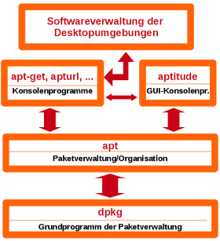

Paketverwaltung
|  |
| Debian Paketverwaltung |
Im Gegensatz zu anderen bekannten Betriebssystemen ist Ubuntu mehr als nur eine Plattform, um Anwendungen auszuführen. Ubuntu ist eine GNU/Linux-Distribution. Das bedeutet, dass neben dem Betriebssystem an sich eine riesige Sammlung an Programmen zur Verfügung steht. So können zusätzliche Software, Anwendungen und Treiber über wenige Mausklicks aus einer sicheren Quelle installiert werden, ohne dass man vorher auf der Homepage des Herstellers eine Installationsdatei (Setup) herunterladen muss.
Ubuntu nutzt konsequent APT (Advanced Packaging Tool) bzw. dpkg für die Paketverwaltung. Somit kann Software in Paketen zuverlässig installiert und wieder deinstalliert werden. Von APT selber bekommt man als Benutzer wenig mit, sondern sieht nur die verschiedenen Oberflächen, welche auf APT aufsetzen. Welche man benutzt, ist eigentlich egal, denn alle steuern am Ende nur APT an.
Alle Desktop-Umgebungen beinhalten jeweils Programme, die umfangreiche Funktionen zur Verwaltung der Pakete bieten. Auch auf der Kommandozeile lassen sich die Funktionen von APT nutzen, was aber eher Fortgeschrittenen zu empfehlen ist.
Seit Ende 2014 gibt es mit snap-Paketen eine weitere Möglichkeit, Software parallel und konfliktfrei zur normalen Paketverwaltung zu installieren. Alle Pakete, die zum System und zum Desktop gehören, werden aber weiterhin (ausschließlich) via apt installiert.
Grundlagen¶
Paketquellen - Was bedeutet eigentlich universe?
Paketquellen freischalten - wie man Paketquellen aktiviert
Personal Package Archive - PPAs freischalten
Y PPA Manager - PPAs verwalten (auch Ubuntu Tweak enthält eine entsprechende Funktion)
sources.list - die Konfigurationsdatei der Paketquellen im Detail
Metapakete - wenn plötzlich [k]ubuntu-desktop automatisch entfernt werden soll
Update - das System auf dem neusten Stand halten
Fremdquellen/-pakete - die Gefahren von Fremdquellen und Fremdpaketen
Paketverwaltung¶
Übersichten:
 Pakete installieren und Anwendungen hinzufügen
Pakete installieren und Anwendungen hinzufügenPaketverwaltung Ubuntu (auch für Varianten wie Xubuntu)
Paketinstallation DEB - Wie man einzelne Pakete installiert
Paketverwaltung Konsole - Updates und Programme aus der Konsole heraus installieren
debconf - Konfigurationssystem für Debianpakete
Weitere Möglichkeiten der Programminstallation¶
snap - snap-Pakete installieren
Flatpak - Flatpak-Pakete installieren
alien - Pakete in den Formaten „rpm“, „lsb“ und „tgz“ installieren
rpm - Die rpm-Paketverwaltung nutzen
Programme kompilieren - Installation von Programmen, die nicht über die Paketverwaltung verfügbar sind, sondern nur im Quelltext vorliegen
apturl - Erweiterung für den Browser, mit der sich Programme via Browser bzw. Link installieren lassen
apt-offline - Paket auf Rechnern ohne Internetzugang aktualisieren und installieren
cron-apt - Sicherheitsupdates automatisch und ohne Benutzer-Anmeldung herunterladen
apticron - Mitteilungen über Updates per E-Mail erhalten
apt-fast - Shellwrapper für apt-get und aptitude, um Pakete schneller herunterzuladen

Problemlösungen und Informationen¶
APT
Informationen zum Advanced Package Toolapt-get - Paket- und Quellenverwaltung
apt-cache - Informationen zu Paketen und Quellen
apt-file - Offline-Suche nach Paketinhalten
apt-key - Schlüsselverwaltung
apt-pinning - Bevorzugung von einzelnen Paketen und Paketquellen für die Paketverwaltung festlegen
Paketverwaltung/Problembehebung - Probleme mit der Paketverwaltung lösen
Paketverwaltung/Tipps - Erstellung von Paketlisten und anderes
apt-dater - Kommandozeilenwerkzeug, mit dem Updates auf einer größeren Anzahl von Hosts verteilt werden können
dpkg-reconfigure - Einzelne Pakete neu konfigurieren, Liste konfigurierbarer Pakete anzeigen
dpkg-www - Informationen zum Paketsystem über den Browser aufrufen
dpkg-repack - Pakete aus installierten Programmen erstellen
Empfohlene Pakete - Umgang mit empfohlenen und vorgeschlagenen Abhängigkeiten
Historische Paketquellen - Paketquellen und Downloads zu nicht mehr unterstützten Ubuntu-Versionen
vrms - installierte unfreie Software anzeigen
Zwischenspeicher und Lokale Paketquellen verwenden¶
Lokale Paketquellen
Lokale Paketquellen erstellen und benutzenapprox - Weiterer schneller Netzwerk-Cache zur Paketverwaltung
apt-cacher - Einmal heruntergeladene Pakete auf mehreren Rechnern verwenden
apt-cacher-ng - Variante von apt-cacher, die ohne Apache-Webserver auskommt
apt-mirror - Einen lokalen Spiegel für die Paketquellen einrichten
apt-p2p - Pakete über ein Peer-to-Peer-Netzwerk empfangen und verteilen
APTonCD - Individuelle Paketquelle als CD/DVD erstellen
- Erstellt mit Inyoka
-
 2004 – 2017 ubuntuusers.de • Einige Rechte vorbehalten
2004 – 2017 ubuntuusers.de • Einige Rechte vorbehalten
Lizenz • Kontakt • Datenschutz • Impressum • Serverstatus -
Serverhousing gespendet von